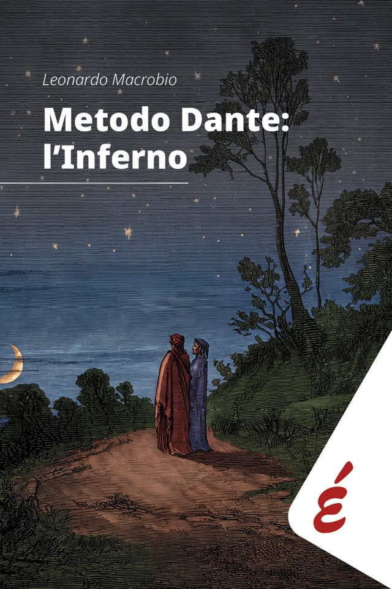

Edizioni Epoké · 2026
Metodo Dante: l’Inferno
Leonardo Macrobio
Un prof di religione, i suoi studenti e l’intera Commedia. Nove canti dell’Inferno raccontati come al bar: un bar, però, dove si dicono cose serie.
In qualità di Affiliato Amazon ricevo un guadagno dagli acquisti idonei.
Scrivi a libro@metododante.it: te la faccio avere io, con dedica.
Lo trovi anche in libreria.
Il libro
Non è un commento alla Commedia né un manuale di dantistica. È un metodo nato in classe: per anni, anche d’estate e fuori dall’orario scolastico, l’autore ha letto con i suoi studenti non qualche canto isolato, ma tutti e cento. Queste pagine sono la trascrizione rivista di quelle lezioni.
Il libro attraversa nove canti dell’Inferno, quelli in cui Dante compie un passo decisivo, e li fa diventare domande di oggi: la selva oscura è la difficoltà di chiedere aiuto, Ulisse è il desiderio di conoscere, le maschere sono la nostra identità.
Nel testo si parla come al bar, un bar dove però si dicono cose serie. Nelle note si parla come in biblioteca, una biblioteca dove però non si dorme.
La chiave di lettura è dichiaratamente cristiana e cattolica: non per convincere qualcuno, ma perché la Commedia non si comprende prescindendo dalla cultura in cui Dante viveva.
Le prossime presentazioni
-
16novore 18
Alessandria
Sala IRIS del Collegio Santa Chiara, via Volturno 18. Lunedì 16 novembre 2026.
-
12dicore 18
San Salvatore Monferrato
Biblioteca civica, nella rassegna «Suarè». Sabato 12 dicembre 2026, dalle 18 alle 19:30.
Al momento non ci sono presentazioni in calendario. Se vuoi organizzarne una, scrivi a libro@metododante.it.
L’autore
Leonardo Macrobio insegna religione cattolica all’IIS Umberto Eco di Alessandria. Prima ha insegnato per dodici anni alla Facoltà di Bioetica dell’Ateneo Pontificio Regina Apostolorum di Roma.
Non è un dantista. Ha letto la Commedia come si legge una lettera che qualcuno ha lasciato a chi viene dopo: non come un testo da studiare, ma come una mappa per capire a che punto si trova del proprio cammino.
Racconta Dante anche nei video di «Quattro passi col Prof». Lo trovi qui: